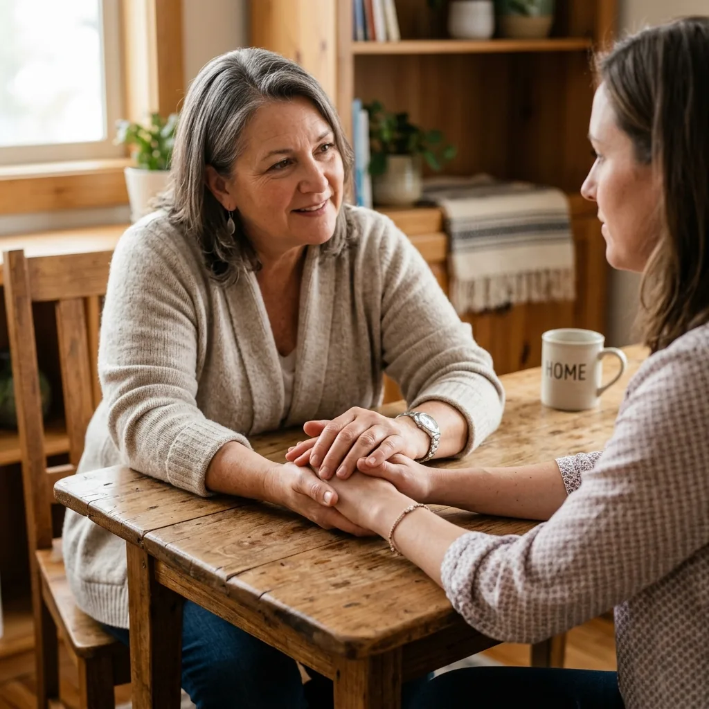
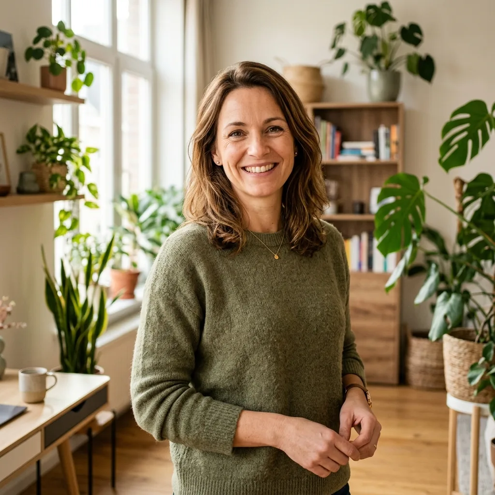

Notre Mission & Philosophie
Inspirés par la nécessité d'un soutien concret et d'une présence authentique, nous œuvrons chaque jour pour accompagner les familles touchées par le handicap.
Nous aidons les familles à Bruxelles. Nous voulons donner du repos et de l'espoir aux parents.
Nos valeurs fondamentales
Ces quatre piliers définissent chacune de nos actions et chacun de nos échanges avec les parents.
L'écoute inconditionnelle
Nous accueillons chaque parent avec bienveillance, sans jugement. Un espace de parole où la vulnérabilité est respectée et comprise.
La dignité de l'enfant
Chaque enfant, quel que soit son handicap, a le droit d'être accompagné avec dignité, respect et d'avoir sa place dans notre société.
La solidarité active
Nous brisons l'isolement en créant un réseau fort entre parents, professionnels et bénévoles à Bruxelles et en Wallonie.
La proximité humaine
Nous croyons à la présence physique, aux visites à domicile, aux moments de partage réels. L'humain est au centre de notre ASBL.
Un accompagnement global de la famille
Inspirée par des services bienveillants comme La Vague et Sapham, Sonia ASBL a pour vocation d'intervenir de manière transversale pour briser la solitude des familles face au handicap.
L'Accompagnement de Proximité
Nos professionnels interviennent à domicile ou sur les lieux de vie pour aider les parents dans leurs démarches quotidiennes, la coordination des soins et le soutien psychologique.
Le Parrainage de Répit (Temps Partiel)
Le parrainage consiste à confier ponctuellement l'enfant (un week-end par mois ou quelques jours durant les vacances) à un parrain ou une marraine bénévole agréé(e). C'est une relation d'affection et de partage qui offre un répit indispensable aux parents et une ouverture sociale pour l'enfant.

Notre Équipe Pluridisciplinaire
Pour accompagner efficacement les familles, Sonia ASBL réunit des professionnels formés et à l'écoute.
Des professionnels formés et à votre écoute pour vous aider.

Sonia
À l'origine du projet, Sonia coordonne l'équipe pluridisciplinaire et assure le premier contact chaleureux avec les familles.
Sonia a créé l'ASBL. Elle coordonne l'équipe et parle aux nouvelles familles.
Sarah
Spécialiste des démarches d'allocations belges (SPF Social, PHARE). Elle vous épaule dans tous vos dossiers administratifs.
Sarah est assistante sociale. Elle vous aide pour les dossiers et les aides d'argent en Belgique.
Marc
Marc anime les activités de répit adaptées et gère notre halte-accueil « La Récré » pour les petits de 0 à 6 ans.
Marc est éducateur. Il s'occupe de la halte-accueil « La Récré » pour les enfants de 0 à 6 ans.
Émilie
Elle supervise nos groupes de parole mensuels à Bruxelles et propose des séances d'écoute psychologique individuelle aux parents.
Émilie est psychologue. Elle anime les groupes de parole pour discuter et libérer votre parole.
Thomas
Thomas recrute, forme et encadre les parrains de répit pour assurer la sécurité et la complicité des séjours des enfants.
Thomas s'occupe des parrains et marraines bénévoles qui accueillent les enfants le week-end.
Pierre
Il assure la logistique des événements, le lien avec nos partenaires institutionnels et la gestion des subventions de la COCOF.
Pierre s'occupe de la logistique, du secrétariat et des partenaires bruxellois.
« Ensemble, nous pouvons créer plus de soutien autour des familles. »
— Sonia ASBL, à vos côtés face au handicap.